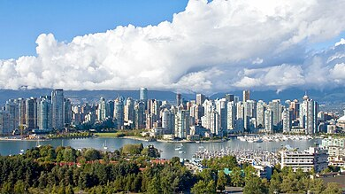

Ryan Rodney Reynolds (Vancouver, 23 ottobre 1976) è un attore e produttore cinematografico canadese naturalizzato statunitense, ora abita a New York
Reynolds è nato e cresciuto a Vancouver, nella Columbia Britannica, in una famiglia di religione cattolica e d'origini irlandesi.
